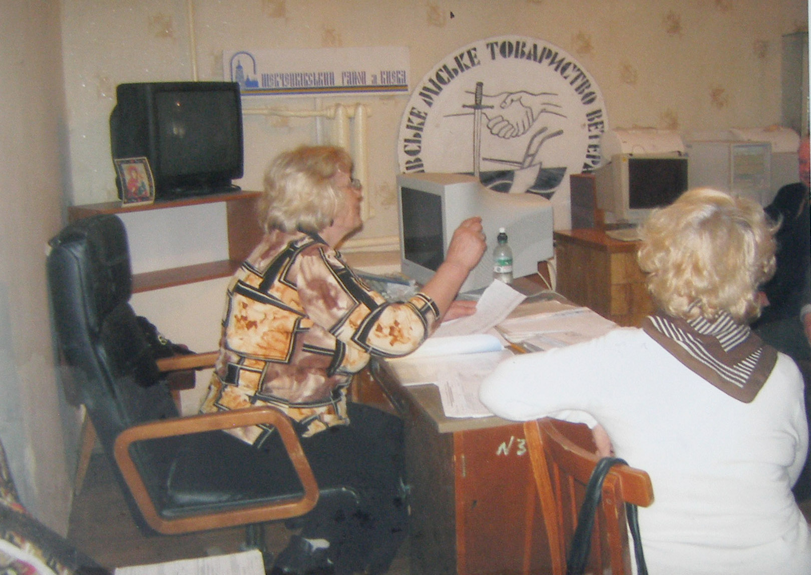
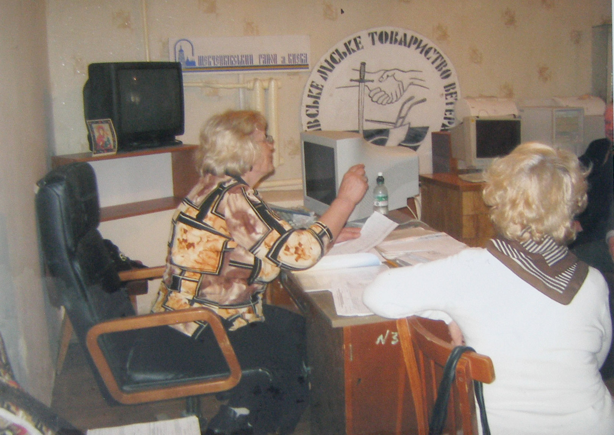

Громадська організація Всеукраїнське об'єднання ветеранів об'єднує ветеранів війни, в тому числі учасників визвольної боротьби України (УПА), дисидентів та репресованих, антитерористичної операції (АТО), дітей війни, ветеранів праці, інших категорій пенсіонерів України на основі спільності інтересів по захисту їх соціальних та інших прав.
Всеукраїнське об'єднання ветеранів створено за ініціативою Народного Руху України на чолі з видатним громадсько-політичним діячем, довголітнім політичним в'язнем, Героєм України Чорноволом В'ячеславом Максимовичем, що є для організації особливою честю та авторитетом історичного значення.
 
